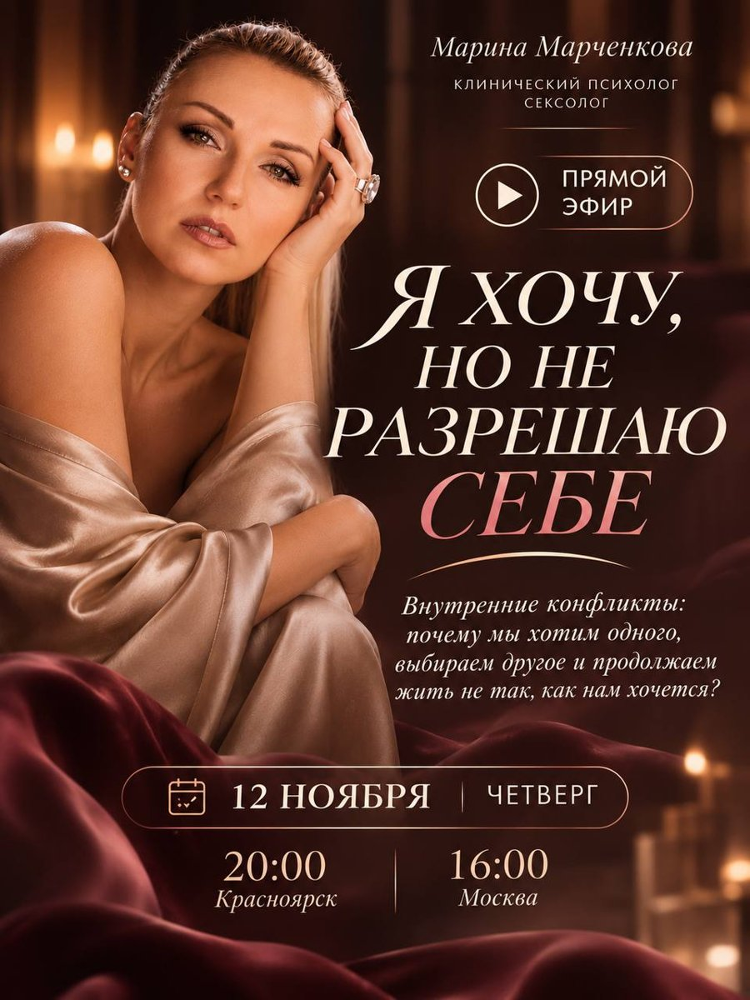
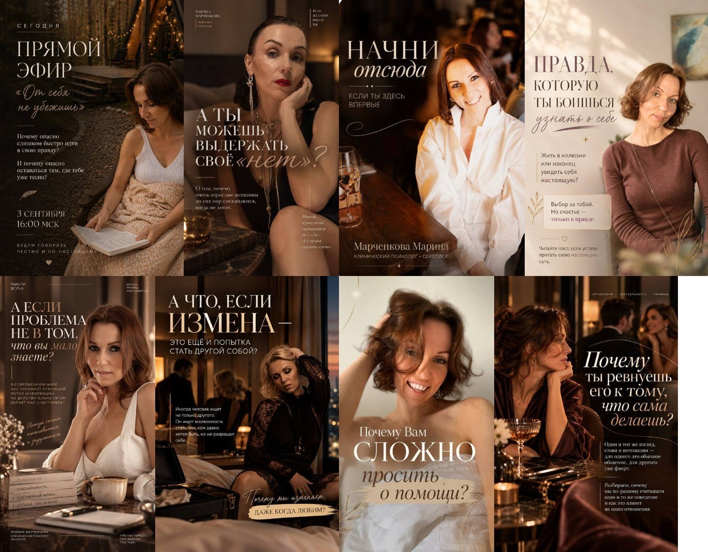

Марина Марченкова, клинический психолог-сексолог: основа макета
Её ориентир первым: «примерно такой стиль» (афиша эфира) и её афиши из канала t.me/mari_sostoyanie. Тёмный бордо и шоколад, атлас, свечи, заглавные с засечками плюс курсив. Ниже два сайта, у которых берём устройство. Назови номер, можно скрестить. Потом набросок: главный экран, палитры, шрифты и один блок.
0. Её стиль


Блондинка на афише не похожа на Марину из видео канала (короткие кудри, шатенка): похоже, модель или нейросеть, это догадка. На сайт её настоящие фото (как «Начни отсюда», «Правда, которую ты боишься»). Все фото в канале не больше 800 px: для главного экрана во всю ширину мало.
Awwwards, отмечен 01.01.2026. Бренд про интимную жизнь и заботу о себе, Германия
Фото на всю ширину, фраза антиквой поверх слева, тонкая кнопка в рамке. Дальше спокойные блоки с крупными фото и текстом рядом. Берём устройство и сдержанность, цвета её: бордо, атлас, тёплый свет свечей
2
fleurdumal.com
Бренд белья и интимных товаров, Нью-Йорк
Имя огромной антиквой во всю ширину поверх фото, под ним меню. Чувственно, но без пошлости. Под её имя «Марина Марченкова» в шапке главного экрана